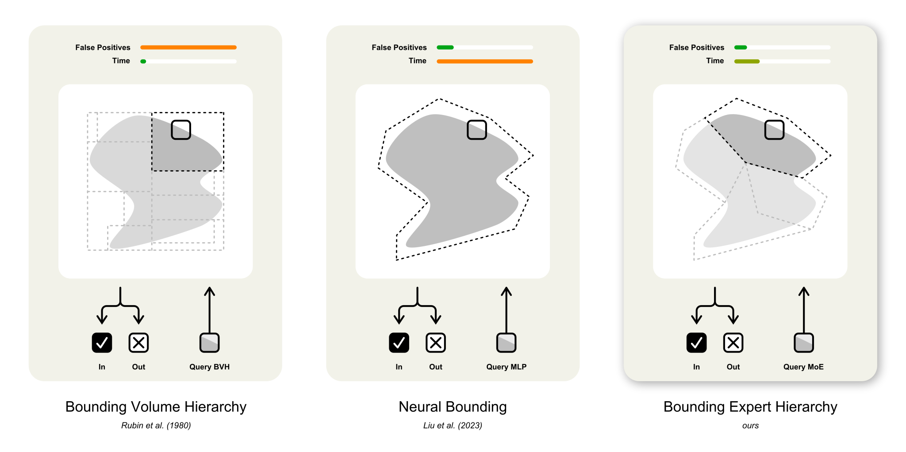
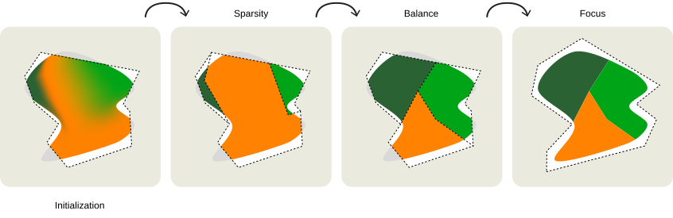
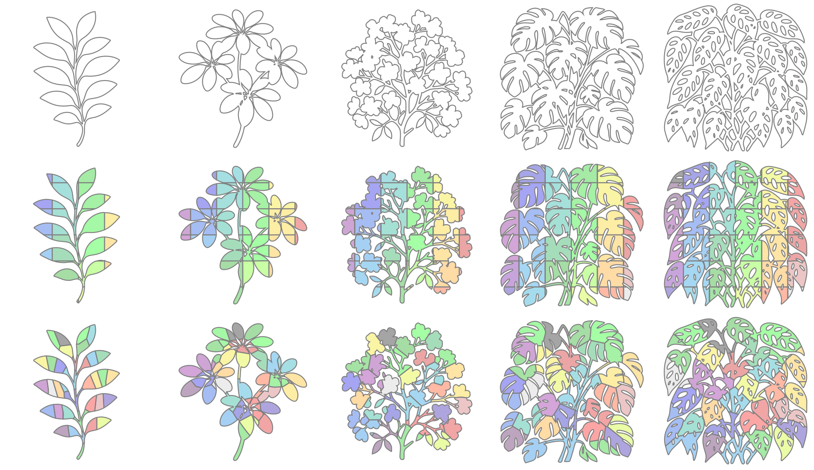
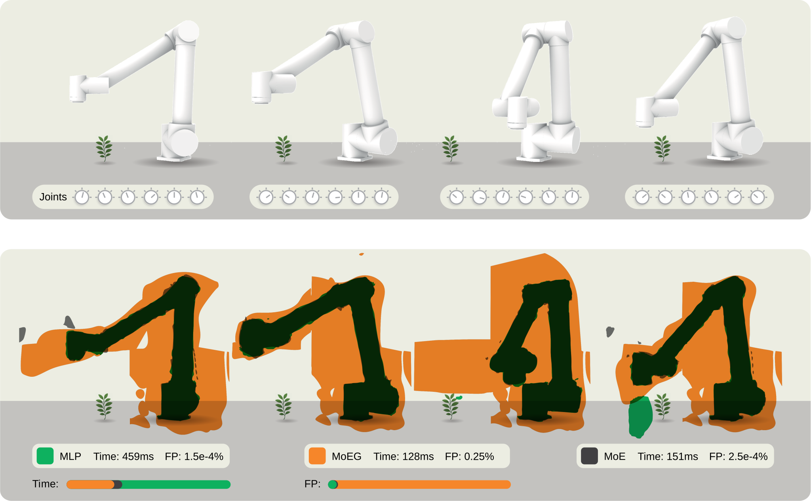

Bounding Expert Hierarchies
Julius Überall1, Tobias Ritschel1,2
1University College London, United Kingdom 2Meta Reality Labs, USA

We present a hierarchy of neural networks to perform bounding queries against geometric assets such as required in collision detection or ray-tracing. Using a mixture of experts, popularized in the context of large language models, we learn a space partitioning together with bounding volumes end-to-end. We demonstrate improvements in query speed and accuracy: instead of executing one monolithic network, only a subset of networks is evaluated, analogous to a bounding volume hierarchy traversal that visits only a fraction of internal nodes. This decomposes the global optimization objective into many smaller and simpler sub-problems distributed among all sub-networks. Unlike prior work, the space partitioning is not predefined and static (e.g. a grid), but emerges as a byproduct of the bounding optimization, allowing for non-trivial higher dimensional space partitioning tailored to the task. The benefit of using neural bounding queries is that they extend naturally to higher-dimensional domains such as time, configuration spaces, or robotic latent control spaces as we demonstrate. We discuss the design choices required for branched learning and execution and evaluate our approach against alternatives.
Research Context

Method

Results

